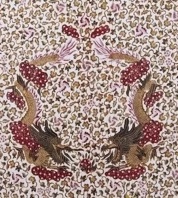

Aneka Motif Batik Di Pekalongan
Batik menjadi salah satu warisan budaya Indonesia yang tak boleh dilupakan. Ada beragam motif, dan salah satu yang perlu diketahui adalah batik Pekalongan.
Tak lagi dianggap kuno, batik saat ini telah menjadi ikon fashion baru dalam busana Tanah Air, lho.
Keindahan dan arti filosofis di dalamnya tak heran jika ini ditetapkan oleh UNESCO (United Nations Educational, Scientific and Cultural) sebagai warisan budaya.
Nah, bicara soal motif, tentu batik Pekalongan memiliki berbagai motif dan model yang menarik perhatian masyarakat.
Berikut beberapa jenis motif serta filosofi di baliknya. Simak, Moms!
1. Motif Batik Liong

Salah satu motif lain dari batik asal Pekalongan adalah batik liong.
Ini merupakan corak yang identik dengan masyarakat etnis Tionghoa di masa lalu. Jika dilihat dari bentuk polanya, motif liong cenderung lebih mengadopsi wujud makhluk hidup seperti ular dan naga. Corak seperti ini biasanya menggambarkan 'perlawanan' dan kekuatan yang cukup kuat pada si pemakainya.
2. Motif Batik Sawat
Apakah yang dimaksud motif sawat? Ini dalam bahasa Jawa dikenal sebagai arti melempar. Artinya, masyarakat Jawa percaya bahwa setiap kekuatan para leluhur dan dewa memiliki peran dalam mengendalikan alam semesta.
Konon, orang Jawa memiliki senjata seperti Batara Indra atau dikenal sebagai petir, kilat atau gledek. Senjata ini digunakan dengan cara dilemparkan. Bentuk fisiknya seperti hewan ular yang memiliki taring atau gigi yang tajam. Tak lain, maksudnya agar masyarakat mendapat perlindungan dari alam semesta.
3. Motif Batik Terang Bulan

Motif lain dari batik Pekalongan adalah corak terang bulan. Ini merupakan gambar yang menampilkan keindahan flora dan fauna di Indonesia.Salah satu motif batik yang identik dengan masyarakat Pekalongan. Dinamakan terang bulan karena motifnya memperlihatkan terangnya cahaya bulan purnama di malam hari. Motif seperti ini bisa dipakai dalam kebutuhan acara apapun. Mulai dari busana sehari-hari ataupun acara formal seperti pernikahan adat.
4. Motif Batik Semen

Melansir dari situs kebudayaan Riverspace, motif semen menjadi salah satu khas klasik model batik daerah Pekalongan. Terlihat mirip dengan motif semen dari batik Jogja dan Solo, namun ada perbedaan yang cukup menonjol. Batik asal Pekalongan ini memiliki karakter yang khas yakni didominasi dengan garis-garis dekoratif di helaian kainnya. Gambar yang ditonjolkan berupa pola tumbuhan, pepohonan, serta aneka macam hewan.
Sebenarnya filosofi motif semen berasal dari nama Ramawijayana, yakni terdiri dari 8 nasihat di dalamnya, antara lain:
- Bayu Brata: mengandung arti leluhur yang digambarkan dengan unsur burung.
- Dhanaba Brata: memberi arti kesejahteraan masyarakat yang digambarkan dengan unsur bintang.
- Agnibrata: arti kekuatan untuk melawan musuh yang digambarkan dengan unsur lidah api.
- Pasabrata: berarti mulia tetapi berbahaya bagi yang mengabaikan yang digambarkan dengan kapal air.
- Sasi Brata: merupakan watak rembulan yang bersifat kesuksesan dan keberuntungan dengan ornamen binatang.
- Suryabrata: karakter seseorang yang tabah dan digambarkan dengan garuda.
- Endar Brata : pemberi kemakmuran dan pelindung dunia yang digambarkan dengan pohon hayat.
5. Motif Batik Jawa Hokokai
Motif batik Jawa Hokokai merupakan batik hasil akulturasi dengan budaya Jepang. Motif batik ini sudah ada sejak masa penjajahan Jepang di Indonesia, dan dibuat oleh pengrajin batik dari Pekalongan. Nama Hokokai diambil dari nama suatu organisasi masyarakat, yaitu Himpunan Kebaktian Masyarakat.
Motif batik ini cenderung rumit, karenan memiliki banyak ornamen, serta warna-warna yang indah dan bernilai seni tinggi. Adapun motif yang paling umum terdapat dalam batik Hokokai adalah bentuk bunga dan kupu-kupu. Hal tersebut bertujuan untuk menyesuaikan preferensi orang Jepang, yang sering kali mengenakan kimono dengan motif-motif tersebut.